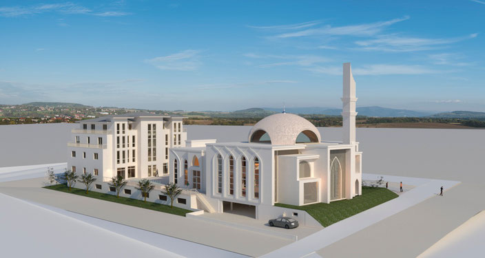

Eine Moschee für alle – ein Ort des Glaubens, des Dialogs und des gemeinsamen Miteinanders.
">>
Die DITIB-Gemeinde Gießen möchte ein würdiges Gemeindezentrum mit Moschee errichten, das nicht nur dem Gebet dient, sondern als Zeichen gelungener Integration auch einen offenen Ort interreligiöser und interkultureller Begegnung sowie des kulturellen Miteinanders im Stadtteil schafft.
(c) 1987 DITIB-Company GmbH
Impressum |
Datenschutz